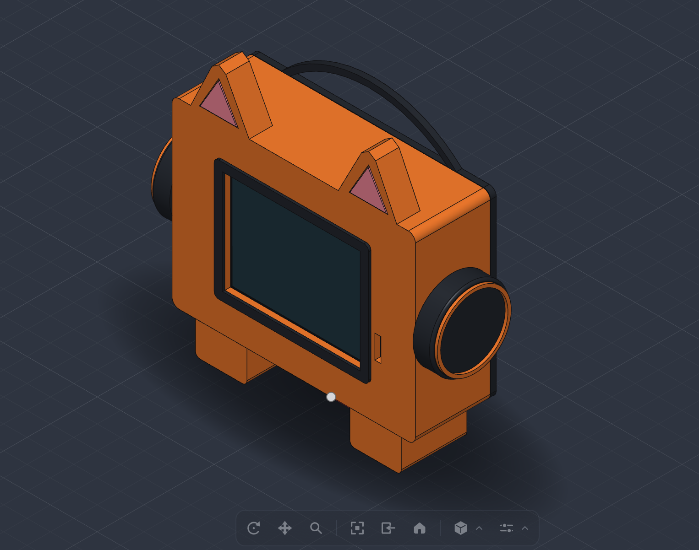
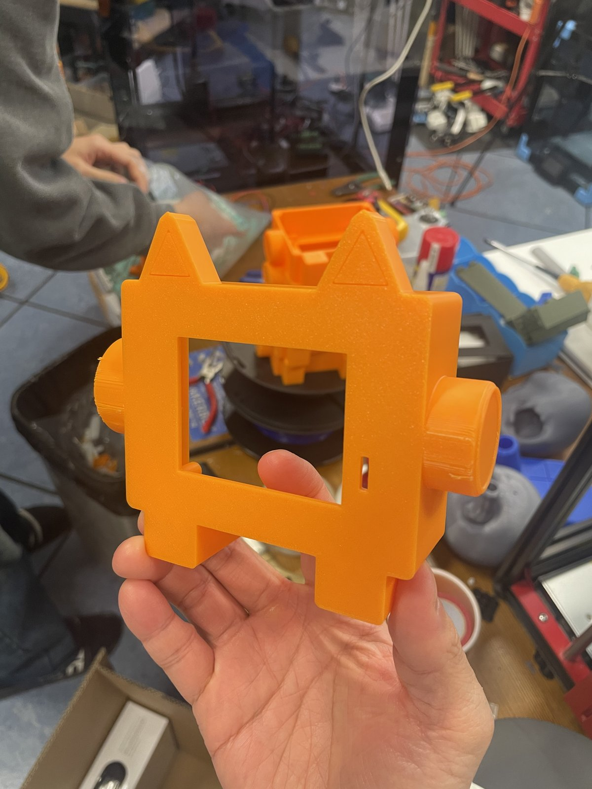
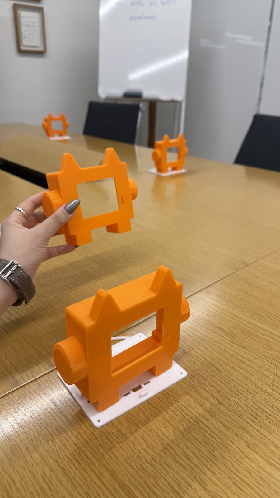
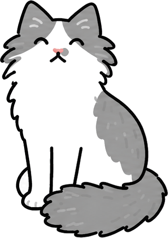
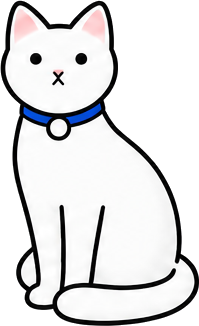

Build two small cat-eared pixel screens for two desks. They show your pets and your baby-to-be, pass messages and high-fives between each other over your home Wi-Fi, and show what your AI coding assistant is doing right now.
Follow the parts in order. Each part tells you what you need, what to do, what you should see, and what to try if it does not work.

Release status. The board firmware is in
firmware/. Everything on the computer side (Parts 6, 7 and 10), the case dimensions (Part 2) and the pixel art (Part 9) are in this repo and work today. Items marked (to be added) are not published yet.
You build two identical boards. Each board is a small computer with a touch screen. They talk to each other directly over your home Wi-Fi, with no cloud account and no pairing step.
Computer A (Claude Code) Computer B (Codex)
hooks -> host/ scripts hooks -> host/ scripts
| HTTP POST /usage | HTTP POST /usage
v v
+-----------+ UDP broadcast, port 47801 +-----------+
| Board A | <---------------------------> | Board B |
| (desk A) | messages, replies, high-five | (desk B) |
+-----------+ visit, poke +-----------+
^ ^
| HTTPS GET, about every 10 minutes (optional)
+------------- Your diary server ------------+
(baby diary, ultrasound, health, birth prep)Three data paths, from simplest to most optional:
47801 on the same Wi-Fi. This works as soon as both boards
are on the same network./usage address. This is how the board knows
"working", "waiting for approval", "error", and your usage limit.Time and skill. Plan one weekend. You need to be comfortable running commands in a terminal. You do not need to write code.
Parts (for two boards)
| Qty | Item | Notes |
|---|---|---|
| 2 | Freenove ESP32-S3 Display 2.8" (model ES3C28P) | 320x240 touch LCD, Wi-Fi, speaker. Must be the touch version |
| 2 | USB-C cable (data, not charge-only) | One per board, for flashing and power |
| 2 | 5 V USB power supply | Any phone charger works |
| about 100 g | Orange PLA filament | Any color works; orange is what the photos show |
Tools
ffmpeg (Part 9, sounds), Pillow
(pip install pillow, Part 10 screen capture).You do not need to solder anything.

What you need: a 3D printer, orange PLA, the board, and the dimensions below.
STL files: case/stl/ (to be added).
Until they are published, you can model your own case from the numbers
in this part, or print any 2.8" ES3C28P case you like.
Dimensions of the board (ES3C28P)
| Item | Value |
|---|---|
| PCB | 86.00 x 50.00 mm, 1.6 mm thick |
| LCD + touch outline | 69.20 x 50.00 mm |
| Visible area | 58.05 x 43.60 mm |
| Active area | 57.60 x 43.20 mm (320 x 240 px) |
| Front stack above PCB | 4.30 mm (0.5 adhesive + 2.3 LCD + 0.5 adhesive + 1.0 touch) |
| Max total thickness | 10.60 mm |
| Mounting holes | 78 x 42 mm spacing, diameter 3.20 mm |
| Visible-area center offset | 3.015 mm sideways from the PCB center |
Design values used for my case
| Item | Value |
|---|---|
| Screen window in the case | 58.85 x 44.40 mm (visible area + 0.4 mm each side) |
| Board guide clearance | 0.5 mm per side |
Print settings (recommendations, not tested limits)
Steps
case/stl/ once they are
added, or use your own model made from the table above.Assembly (after Part 4 works)

You should see: the screen centered in the window, with no black bezel showing on any side.
Tip. If the screen looks off-center, check the 3.015 mm offset in the table. The visible area is not centered on the PCB.
My own build runs the USB-C cable out through an extension flat cable inside the case. For flashing or reading logs, I take the extension out and plug the board in directly. A standard case without an extension is fine for power only.
The firmware is in
firmware/. It is based on xiaozhi-esp32 (MIT), with the voice-assistant parts removed, and it contains only my own characters.
What you need: the board connected to your computer with a USB-C data cable, and ESP-IDF installed.
Steps
Install ESP-IDF. The firmware base targets
ESP-IDF v6.0 or later (v6.0.2 recommended by the base project). Follow
Espressif's official install guide, and note where you installed it. I
install to ~/esp/esp-idf.
Open a terminal and load the ESP-IDF environment (repeat in every new terminal):
. ~/esp/esp-idf/export.shGo to the firmware folder and build. The chip is an ESP32-S3, and the firmware's saved configuration is already set for the Freenove 2.8" display board.
cd firmware
idf.py buildFind the serial port on macOS:
ls /dev/cu.usbmodem*Flash. Replace the port with yours:
idf.py -p /dev/cu.usbmodem1101 -b 460800 flashIf the flash stops halfway, run it again at a lower speed (for
example -b 115200).
You should see: the build ends with a firmware file
at build/xiaozhi.bin, and the flash log contains
Hash of data verified five times. Then the board reboots
and the screen turns on.
Tips
idf.py build can report success even when it failed.
Check the log for error: or
ninja: build stopped, and check that
build/xiaozhi.bin has a new timestamp.tools/gen_pack.py.What you need: a flashed board, a phone or laptop, and your home Wi-Fi name and password (2.4 GHz).
On the first boot the board has no Wi-Fi saved, so it starts its own temporary Wi-Fi hotspot and shows a three-step "first time setup" guide on its screen.
Steps
Power the board with USB-C. Wait for the setup guide on the screen.
On your phone, open the Wi-Fi list and join the open hotspot
named Xiaozhi- followed by four characters (for example
Xiaozhi-5855; yours will differ).
Open a browser and go to:
http://192.168.4.1Pick your home Wi-Fi from the list, enter the password, and save.
The board leaves setup mode and joins your Wi-Fi. The setup guide disappears.
You should see: the idle screen with the characters sitting in a scene, and the usage limit cells in the top corners.
Tips
Xiaozhi- hotspot (some phones switch back to a network
with internet).What you need: both boards flashed and on the same Wi-Fi network.
There is no pairing step. Each board sends a small UDP packet to the
whole network on port 47801, and any Desk Buddies board on
the same network receives it.
Steps
POKE! to SENT when board B confirmed.You should see: SENT on the sender, a
heart on the receiver.
Troubleshooting
NO PEER means no board answered within 1.5 seconds.
Check that both boards are on the same Wi-Fi.Test without touching the screen (replace
<BOARD_IP> with your board's address, see Part 6 for
how to find it):
curl -d '{"poke":2}' http://<BOARD_IP>/usage # send a poke through the real path
curl -d '{"poke_rx":3}' http://<BOARD_IP>/usage # show a received poke locallyWhat you need: a computer on the same Wi-Fi as the board, Python 3, this repo downloaded, and Claude Code and/or Codex installed.
The scripts in host/ find the board, install hooks (so
your assistant reports its state), and push the state to the board's
/usage address. Every hook runs in the background and
cannot slow down your assistant.
Steps
Open a terminal in the repo folder.
One-line setup. This finds the board, installs hooks for Claude Code, and installs hooks for Codex if Codex is present:
python3 host/setup.pyIt backs up your existing settings first, only adds entries, and gives the same result when run again.
Or do it step by step:
python3 host/find_board.py # finds the board on your Wi-Fi, writes host/board.json
python3 host/install_claude.py # Claude Code hooks + statusline tee in ~/.claude/settings.json
python3 host/install_hooks.py # Codex hooks in ~/.codex/hooks.jsonUseful options (all exist in the scripts):
python3 host/setup.py --dry-run # show what would change, write nothing
python3 host/setup.py --config-dir ~/.claude-work # another Claude Code config folder (repeatable)
python3 host/setup.py --skip-board # skip the board search
python3 host/install_claude.py --remove # take the hooks out again
python3 host/install_hooks.py --removeIf the board is not found automatically, you can
tell the scripts its address yourself. find_board.py looks
for the board by its MAC address (a unique hardware address, printed on
your router's device list). Set it, then run again:
export CLAUDEBOT_BOARD_MAC=<your board's MAC address>
python3 host/find_board.py --probeOr skip the search and point the scripts at the board directly:
export CLAUDEBOT_BOARD_URL=http://<BOARD_IP>/usagehost/board.json holds the saved address (and optional
lat / lon for weather).
Restart Claude Code (or Codex), and send it a prompt.
You should see: the character on the board reacts. While the assistant works, the board shows a working animation with the tool name. When the assistant waits for your approval, the screen border pulses. After an error it shows an error face for 5 seconds. When a turn finishes it shows a "done" face for 8 seconds, then returns to idle.
| State | Meaning on the board |
|---|---|
working |
A tool is running |
thinking |
The assistant is reading your prompt |
permission |
Waiting for you (stays until you answer, 15 minute cap) |
error |
A tool failed (back to working after 5 s) |
juggling |
A sub-agent is running |
done |
Turn finished (back to idle after 8 s) |
sleeping |
The board sleeps after 10 idle minutes |
Notes
The hooks use these events: SessionStart, SessionEnd, UserPromptSubmit, PreToolUse, PostToolUse, PostToolUseFailure, PermissionRequest, Notification, SubagentStart, SubagentStop and Stop. Each is registered as asynchronous with a 5 second timeout.
Codex has no PostToolUseFailure or
Notification event, so claude_state.py reads
the Codex session log to detect errors.
Check the hook without the assistant: send a state by hand.
curl -m 8 -X POST http://<BOARD_IP>/usage -d '{"state":"working","ctx":"test"}'The host scripts that search your network
(find_board.py) use macOS command-line tools
(arp, route, ifconfig). On Linux,
write the board address into host/board.json yourself, as
{"url": "http://<BOARD_IP>/usage"}. I tested the host
side on macOS only.
Run the included tests with
cd host && python3 -m unittest discover -p "test_*.py".
Troubleshooting
tail /tmp/claudebot-state.log /tmp/claudebot-push.log.
No route to host usually means the address is wrong or your
computer has not resolved the board yet. Ping the board a few times,
then run python3 host/find_board.py --rescan.--python <path> to the installer, or set
CLAUDEBOT_HOOK_PYTHON.python3 host/find_board.py to refresh the
address.What you need: Part 6 done.
Usage limit. The top corners of the idle screen show
how much of your 5-hour and weekly limit is left, with the time until
reset. For Claude Code, the limits come from the statusline data.
install_claude.py adds a small tee command in
front of your existing statusline command, which saves a copy of the
data to a file in /tmp. Your own statusline keeps working.
For Codex, host/codex_usage.py reads the limits from the
Codex session logs in ~/.codex/sessions, and no statusline
is needed.
A ~ after a label (for example 5h~) means
the number is the last one received and is more than 15 minutes old.
The cost columns (dollars and tokens used) need a usage-counting
module that is not part of this repo, so Claude Code cost figures are
not available from this repo alone. Codex shows token counts. See
host/push_usage.py if you want to wire in your own
counter.
Weather. The board fetches weather from Open-Meteo by itself every 30 minutes, and your character changes outfit and weather particles (rain, snow, and more). You can also push weather from your computer on a schedule:
Test without a board:
python3 host/push_weather.py --dry-runSet your location by adding lat and lon
to host/board.json, for example
{"lat": 37.5, "lon": 127.0}. Without it the default is
Seoul.
On macOS, install the scheduled job. First open
host/com.claudebot.weather.plist and replace
/ABSOLUTE/PATH/TO/desk-buddies/host/push_weather.py with
the real path on your computer. Then:
cp host/com.claudebot.weather.plist ~/Library/LaunchAgents/
launchctl load ~/Library/LaunchAgents/com.claudebot.weather.plistThe job runs once at load and then every 30 minutes
(StartInterval 1800). Its log is
/tmp/claudebot-weather.log.
You can also set the board's weather location directly (replace the numbers with yours):
curl -d '{"geo":{"lat":37.5,"lon":127.0}}' http://<BOARD_IP>/usageYou should see: a weather icon and temperature on the top bar, and rain or snow particles when the weather is wet.
Tip. To try a look without waiting for real weather, send it by hand:
curl -d '{"weather":{"kind":"rain","temp":18,"night":false}}' http://<BOARD_IP>/usagekind can be rain, snow,
clear, cloud or partly.
What you need: a web server you control that can answer HTTPS requests with JSON. The server I use is my own app and is not part of this repo, so this part describes only what the board expects, so you can build or adapt your own.
What the board does. About every 10 minutes it sends
an HTTPS GET to your server's /api/board address with an
Authorization: Bearer <token> header. When you open
one of the menu items, it fetches
/api/board?part=ultrasound, ?part=health or
?part=prep (skipping a part it fetched within the last 5
minutes). Photos are fetched as small JPEG thumbnails from addresses
that your server signs.
Rules for your server
https only. The board will not take a plain
http address.?part=<name> must include
"part": "<name>" with the same name. If it does not
match, the board treats the request as failed. (An old server that
ignores part and returns the diary list is rejected this
way.)Tell each board where the server is. Do this once
per board, using the board's token and who is writing (mom
or dad, so a board alerts only for the other person's
entries):
curl -s -X POST http://<BOARD_IP>/usage -H 'Content-Type: application/json' \
-d '{"diary":{"url":"https://<YOUR_DIARY_SERVER>","token":"<YOUR_TOKEN>","me":"mom"}}'Use "me":"dad" for the other board. Send the server address (url, https only) together with the token or before it: changing the address later clears the stored token. You can also bake a default address into the build with CONFIG_DIARY_DEFAULT_URL. The board only shows the diary menu after it has both an address and a token.
JSON shapes
Ultrasound, GET /api/board?part=ultrasound:
{
"part": "ultrasound",
"visits": 4,
"photos": 15,
"items": [
{"id": "v4", "date": "2026-11-16", "week": [20, 3],
"photos": ["<signed-photo-url>", "<signed-photo-url>"]}
]
}week is [weeks, days]. Each visit has up to
4 photo addresses.
Mom's health, GET /api/board?part=health:
{
"part": "health",
"date": "2026-11-16",
"today": {"kcal": 1500, "caffeine_mg": 50, "count": 3},
"limits": {"caffeine_mg": 200},
"weight": {"kg": 55.0, "date": "2026-11-15", "goal_max_kg": 60},
"meals": [
{"meal": "breakfast", "items": [{"name": "toast", "risk": null}]}
],
"exercise": {"week_count": 3, "last": {"date": "2026-11-14", "name": "walk"}}
}weight can be null.
exercise.last can be null. An item with a
risk value is drawn in yellow with a !. The
fields in today beyond kcal and
caffeine_mg are my own server's; firmware/main/display/usage/manbok_data.h lists the exact set the board reads.
Birth prep, GET /api/board?part=prep:
{
"part": "prep",
"birth": "2027-01-31",
"dday": 76,
"open": 7,
"items": [
{"due": "2026-12-01", "title": "Pack hospital bag"},
{"due": null, "title": "Choose a pediatrician"}
]
}The board sorts items by nearest due date, and due: null
shows a dash.
Diary list, GET /api/board (no part): the
latest 10 entries, each with its date, who wrote it (mom or
dad), mood, text, and the first photo (photo),
up to 10 photos (photos) and a count
(photo_count). The exact fields the board reads are in firmware/main/display/usage/diary_data.h.
Test without a server by asking the board to open a panel:
curl -d '{"manbok_menu":1}' http://<BOARD_IP>/usage # open the 6-item menu
curl -d '{"manbok_panel":"ultrasound"}' http://<BOARD_IP>/usage # open a panel: ultrasound, health, prep, message, visit
curl -d '{"manbok_fetch":1}' http://<BOARD_IP>/usage # fetch the three parts again nowYou should see: the menu opens with six items. Ultrasound shows one row per visit with four thumbnails. Pressing the heart for about 0.8 seconds opens the menu on boards that have a token.
Tip. If a panel shows "could not fetch", test your
server with curl and the same Bearer header and check that
part is echoed back.
Characters. art/ contains the cutouts I
used: rona/ and rozzi/ (two cats), and
manbok/ (the baby). Each folder has sheets for faces (5),
poses (8 for the cats, 8 for the baby) and turnarounds (6 views). They
are all (c) the author and shown as an example of the format. Replace
them with your own pets and people.


Steps for your own characters
Draw or generate pixel-art animation frames for each state (idle, thinking, working, juggling, permission, error, done, sleeping). I made mine with a separate pixel-art tool that is not part of this repo.
Put each character in a folder packs/<name>/
with a pack.json that maps the board states to your
animation states, and a sets/<set>/manifest.json for
each set of frames. The format is documented at the top of
tools/gen_pack.py. Pack names are 8 characters or
fewer.
Generate the C++ table the firmware compiles in. You can run it by hand to check your files first:
python3 tools/gen_pack.py packs/<name> out.ccThe firmware build calls its own copy, firmware/tools/gen_pack.py, by itself.
Sounds. The notification sounds are your pets'
voices. tools/import_notify_sounds.py cuts six short clips
from your recordings, converts them to 16 kHz mono, filters noise, sets
the volume and writes six .pcm files that the firmware
embeds. It needs ffmpeg on your PATH.
Put your recordings in a folder with these exact names:
rona.m4a, rozzi.m4a (your own pets or any two
voices), baby_5mo.ogg, baby_14mo.ogg (baby
babble, see the credit links in Part 11).
Open tools/import_notify_sounds.py and edit the
CLIPS list: for each output name, change the start and end
seconds to a clean sound in your recording.
Run it. --preview writes WAV files you can listen
to:
python3 tools/import_notify_sounds.py --src ~/my-sounds --preview ~/my-sounds/previewThe output goes to main/sounds/ next to the firmware.
The audio files themselves are not in this repo.
Listen to the previews, adjust the times, repeat, then rebuild and flash the firmware (Part 3).
Volume and quiet hours can be changed live without flashing. Defaults are volume 50 and quiet from 23:00 to 07:00:
curl -d '{"sound":{"vol":60,"quiet_from":23,"quiet_to":7}}' http://<BOARD_IP>/usage
curl -d '{"sound_test":"poke"}' http://<BOARD_IP>/usage # also: guest, rona, rozzi, manbokvol 0 mutes the board.
You should see: the clip names printed with their length, and the previews playing the sounds you chose.
Screen capture. The board can send its screen over
the network. tools/screen.py turns it into a PNG. It needs
Pillow (pip install pillow).
export CLAUDEBOT_URL=http://<BOARD_IP>/usage
python3 tools/screen.py out.pngOr set SCREEN_URL=http://<BOARD_IP>/screen
instead. You can also convert a raw dump you saved earlier:
python3 tools/screen.py out.png raw.bin.
You should see: wrote out.png, and a
640 x 480 picture of what the board shows now.
Troubleshooting table
| Symptom | Likely cause | What to try |
|---|---|---|
| Board shows only idle, never reacts to the assistant | Computer cannot reach the board | Read /tmp/claudebot-state.log and
/tmp/claudebot-push.log. Ping the board, then
python3 host/find_board.py --rescan |
No route to host in the log |
Address changed, or macOS has not resolved the board yet | Ping the board a few times, run find_board.py, set a
fixed IP in the router |
find_board.py cannot find the board |
MAC address unknown | Set CLAUDEBOT_BOARD_MAC, or run with
--probe, or write the address in
host/board.json |
| Board stuck on the setup guide | No saved Wi-Fi, or wrong password | Join the Xiaozhi- hotspot, open
http://192.168.4.1, save the Wi-Fi again |
Poke shows NO PEER |
Boards on different networks, or client isolation | Put both on the same main Wi-Fi, turn off guest isolation |
| Screen stays black after flashing | Board stuck in download mode | Unplug and replug USB. Do not press reset repeatedly |
| Flash stops with "No more data to read" | USB glitch | Run the same flash command again, at -b 115200 |
| Serial log empty or garbled | The port reset the board | Wait three seconds, close and reopen the port |
Screen shows approve? for a long time |
A session waits for permission | Answer it in the assistant. Permission state is capped at 15 minutes |
| Weather does not change | Job not loaded or wrong path in the plist | Check /tmp/claudebot-weather.log, fix the path in the
plist and load it again |
| Menu panel says it could not fetch | Server not reachable or part not echoed |
Test the server with curl and the Bearer header |
| Invalid value | The board returns HTTP 400 for out-of-range values | Check the field in the table of the README |
Board HTTP API at a glance. The main endpoint is
POST /usage with a JSON body, and every field is optional.
The README has a field table. GET /screen returns the
current screen.
firmware/packs/gift/font_galmuri11_12_1.bin is a 12px Galmuri11 bitmap for the ticker.firmware/main/sounds/ (see firmware/NOTICE).host/, tools/):
MIT, see LICENSE.firmware/): code MIT, see firmware/LICENSE; character art, scene art and cat recordings see firmware/NOTICE.art/,
case/*.jpg, case/*.png): (c) the author, all
rights reserved. They are not covered by the MIT license.Project repository: https://github.com/wineny/desk-buddies